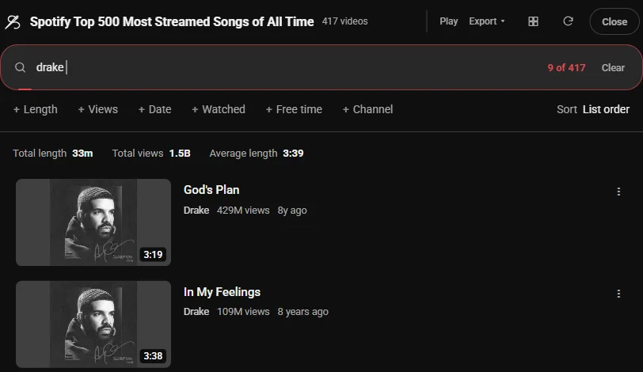

Guide 09·Playlists
How to search in a YouTube playlist.
Updated 16 November 2026
Short answer
YouTube has no search box inside a playlist, and Ctrl+F only sees the videos loaded so far. Needle reads the whole playlist, yours or anyone's public one, and lets you search and filter it by title, channel, length and views. To search every playlist you've saved at once, type in:playlists into YouTube's search bar.
01·The problem
Why you can't search a playlist on YouTube
A playlist page has a title, a Play all button and a list. There's no search box on it and no filters, and the search bar at the top searches all of YouTube, not the playlist you're on.
The page doesn't hold the whole list either. Checked in November 2026 on a public playlist of 499 videos: 100 were on the page when it opened, and the rest only arrive in batches as you scroll. Playlists you made get a sort menu. Other people's don't get that much.
02·The workaround
The workaround: scroll, then Ctrl+F
- Open the playlist.
- Scroll to the bottom and keep going until no more videos load.
- Press Ctrl+F (Cmd+F on a Mac) and type a word from the title or the channel name.
It works on words and nothing else, and only on what has loaded. A 600-video course is six rounds of scrolling before its last lesson can be found, and you do it again on every visit.
03·On your phone
On your phone
The YouTube app has no search inside a playlist either, and no Ctrl+F to fall back on. If you remember who made the video, going to that channel and looking there is usually quicker.
04·With Needle
Search it with Needle
- Open the playlist.
- Press the needle button in the bottom right corner, or Alt+Y.
- Needle reads every video in it, not just the ones on screen.
- Type to search titles and channels, or filter by Length, Views, Date, Watched and Channel.

The Channel picker lists everyone in the playlist with how many videos each has, which on a big mixed playlist is often the fastest way in.
05·Filters
Narrow it down
A word is often not what you remember. Type any of these into the same box, on their own or after a word:
<10m | Under 10 minutes |
>1h | Over an hour, for the full lectures |
unwatched | Only what you haven't started |
@name | Only that channel's videos |
-word | Leave out anything with that word in the title |
The sort menu then puts what's left in order, shortest or longest first included, and the line above the list adds up how long it all runs.
06·All at once
Every playlist you've saved, at once
Type in:playlists and a word into YouTube's search bar. The first time, Needle reads each playlist in your library once, then keeps them for twelve hours, so the search after that is instant. in:playlists rust <20m is every short Rust video across all of them.
07·Watch Later
Watch Later and Liked videos
Both are playlists underneath, and the same panel opens on them. They have their own quirks, like stopping at the first 100 until you ask for the rest: searching Watch Later and searching your Liked videos cover those.
Found what you were after? Export copies the links or saves the list as a spreadsheet. How to export a playlist.
08·Questions
Questions?
Does it work on someone else's playlist?
Yes, any playlist you can open: public ones, and unlisted ones you have the link to.
What about private playlists?
Only your own, while you're signed in, the same as YouTube.
How long is too long?
Needle reads up to the Video limit in Needle's settings, 1,800 by default, 100 at a time. A long playlist takes a few seconds, then filtering is instant.
Does Ctrl+F search a whole playlist?
Only the part that has loaded. A playlist page opens with 100 videos and adds more as you scroll, so anything further down isn't found until you've scrolled to it.
Can I search a playlist in the YouTube app?
No. The app has no search inside a playlist, and Needle is for YouTube in a desktop browser.
Why does Needle show fewer videos than the playlist says?
YouTube's count includes videos that were deleted, made private or aren't available where you are, and it leaves those out of the list. Needle counts the ones that are there. The 499-video playlist in this guide listed 417.
Is it free?
Yes. No account, no trial, no paid tier.